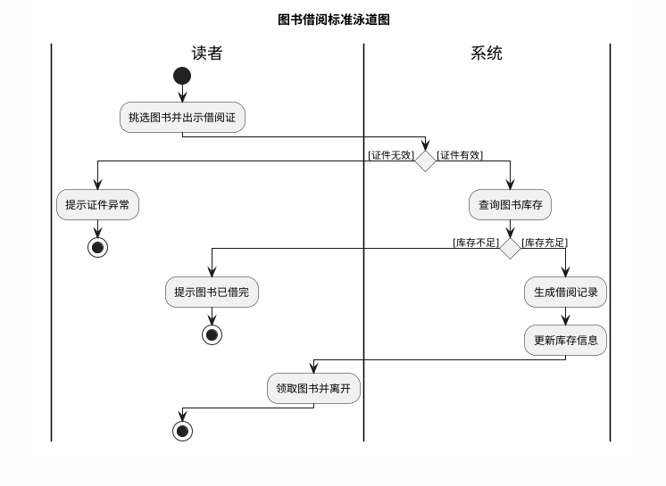

毕业设计论文分章节填空指南
请同学们严格按照以下小标题结构进行填充，切勿离题。
第 1 章 绪论
- 写宏观环境：国家是否出台了相关数字化/互联网+的政策？
- 写行业痛点：传统人工管理模式有哪些弊端（如效率低、易出错、数据难统计）？
- 核心要求： 必须引用数据或具体现象说明“为什么现在需要做这个系统”。
- 国内现状：国内同类软件发展到了什么程度？有哪些大厂在做？
- 国外现状：国外是否有成熟的开源方案？
- 核心要求： 至少引用 5-8 篇参考文献的观点，指出现有系统的不足。
- 目的：本系统旨在实现xx流程的自动化/智能化。
- 意义：实际应用后能节省多少人力，或者提高多少效率。
第 2 章 相关技术与可行性分析
- 后端技术（如 SpringBoot）： 简述特点（轻量、自动配置），并说明为什么适合本项目（快速开发、生态好）。
- 前端技术（如 Vue/React）： 简述组件化开发的优势，以及前后端分离的好处。
- 数据库（MySQL）： 强调其开源免费、性能稳定，足以支撑本系统的并发量。
- 其他（MyBatis/Redis等）： 简要带过即可。
- 👉 注意：不要大段复制百度百科的定义，要结合“为什么选它”来写。
-
示例 — 写法对比：
❌ 错误写法： Vue.js 是一个用于构建用户界面的渐进式框架。它设计为可以自底向上逐层应用。（纯定义，像说明书）
✅ 正确写法： 本系统前端采用 Vue.js 框架。由于本系统交互逻辑复杂，需要频繁更新页面数据（结合项目），Vue 的双向数据绑定特性能够有效减少 DOM 操作，提高页面响应速度（说明优势），因此适合本项目的开发。
在此基础上分析项目能否落地：
- 2.2.1 技术可行性： 基于上述 2.1 介绍的技术，说明团队（你自己）是否已掌握，或者有丰富的文档支持开发。
- 2.2.2 经济可行性： 硬件成本（普通PC）、软件成本（开源免费）。
- 2.2.3 操作可行性： 系统界面友好，用户无需复杂培训。
第 3 章 需求分析
- 描述**核心业务**的数据流向（例如：用户下单 -> 商家接单 -> 发货）。
- 要求： 必须搭配**业务流程图**。
业务流程图画法教程：图书借阅
🤖 提示词示例： "请帮我画一个[图书借阅]的业务流程图，使用 PlantUML 泳道图语法，包含[读者]和[系统]两个角色。注意生成的图要满足UML 2.0 或更高版本的标准规范"

PlantUML 代码示例
@startuml
title 图书借阅标准活动图
|读者|
start
:挑选图书并出示借阅证;
|系统|
' 判定节点
if () then ([证件无效])
|读者|
:提示证件异常;
stop
else ([证件有效])
|系统|
:查询图书库存;
if () then ([库存不足])
|读者|
:提示图书已借完;
stop
else ([库存充足])
|系统|
:生成借阅记录;
:更新库存信息;
|读者|
:领取图书并离开;
endif
endif
stop
@enduml
- 按角色分类写（管理员能做什么？用户能做什么？）。
- 例如：管理员功能包括用户管理、商品管理、订单审核等。
- 要求： 必须搭配**用例图(Use Case Diagram)**（画法参考流程图的方法）。
示例：用例图（Use Case Diagram）
- 性能需求： 规定系统的响应时间、并发数等指标。
- 安全性： 说明数据加密、权限控制、防攻击措施。
- 可靠性： 说明系统的稳定性、备份恢复机制。
- 兼容性： 说明支持的浏览器、设备类型。
写法示例（分析口吻版）
- 性能需求分析： 本系统主要面向全校师生使用，考虑到在借阅高峰期（如期末或开学初）可能出现的高并发访问情况，系统需保证在高负载下的稳定性。具体指标要求：支持至少 50 个用户同时在线操作，首页及核心业务页面（如图书检索、借阅办理）加载时间不超过 3 秒，以确保良好的用户体验。
- 安全性分析： 由于系统中存储了大量读者的个人隐私信息（如学号、手机号）以及图书资产数据，安全性至关重要。系统需采用 Spring Security 框架进行权限控制，用户密码必须经过 BCrypt 加密存储。此外，所有敏感数据传输均需通过 HTTPS 协议加密，并对前端输入进行严格过滤，防止 SQL 注入和 XSS 跨站脚本攻击。
- 可靠性分析： 图书馆业务具有持续性特点，要求系统具备 7×24 小时连续运行能力。为防止数据丢失，系统需建立自动备份机制，每日凌晨自动备份数据库。当服务器发生故障时，应能在 30 分钟内完成备用节点的切换与数据恢复，最大程度降低对借阅业务的影响。
- 兼容性分析： 考虑到师生使用的设备多样化，本系统前端界面需采用响应式布局（Responsive Design），能够自适应 PC 端、平板及手机端等不同分辨率的屏幕。同时，系统应全面兼容 Chrome、Firefox、Edge 等主流浏览器，确保在不同环境下功能均能正常使用。
第 4 章 系统设计
- 4.1.1 系统架构设计： 说明系统采用的架构模式（如 B/S 架构、MVC 模式、前后端分离架构）。需画出系统架构图（展示表现层、业务逻辑层、数据访问层等）。
- 4.1.2 功能结构设计： 将需求分析中的功能进一步细化，画出系统功能结构图，清晰展示系统的模块划分。
写法示例：系统功能结构描述
本系统主要划分为读者端和管理员端两大功能模块（我学院要求三个以及以上角色）：
- 读者端： 包含图书查询（支持模糊搜索）、借阅管理（查看当前借阅、历史记录）、个人中心（修改密码、个人信息维护）等功能。
- 管理员端： 包含图书管理（图书上架、下架、修改）、用户管理（读者账号审核、禁用）、借阅审核（处理借阅请求）、数据统计（借阅量统计图表）等功能。
（注：此处需配合功能结构图插入论文中）
- 核心模块流程设计： 针对关键业务（如“借书”、“下单”），画出流程图或者时序图（Sequence Diagram）或活动图，展示交互细节。
- 类设计（可选）： 如果是面向对象设计较强的系统，可以补充类图。
- 4.3.1 概念结构设计： 必须放 E-R 图（实体关系图），展示实体、属性及实体间的关系（1:1, 1:N, M:N）。
- 4.3.2 逻辑结构设计： 必须放数据库表结构表格。每个表需包含：字段名、数据类型、长度、是否主键/外键、是否为空、备注说明。
写法示例：数据库概念设计（E-R图说明）
根据需求分析，本系统主要包含以下实体及其关系：
- 用户实体： 属性包含用户ID、用户名、密码、联系方式等。
- 图书实体： 属性包含图书ID、书名、作者、出版社、库存数量等。
- 借阅记录实体： 属性包含记录ID、借阅时间、归还时间、状态等。
实体间关系： 一个用户可以借阅多本图书（1:N），一本图书可以被多个用户借阅（但在同一时间只能被一人借阅，通过库存控制）。用户与借阅记录之间是 1:N 关系。
（注：此处需插入完整的 E-R 关系图）
🎓 专家建议：ER 图过大如何处理？
✅ 标准拆分原则
- 原则 1：按业务域拆分
推荐：用户权限、核心业务、辅助业务、基础数据。❌ 不推荐按表数量平均拆。 - 原则 2：先总后分
一张简化的“整体 ER 图” + 多张详细的“局部 ER 子图”。
🛠️ 画图技术规范
- 每张 ER 图 不超过 6–8 个实体。
- 实体命名与数据库表名一致。
- 关系基数（1:1 / 1:N / M:N）必须标注。
- 公共实体（如用户表）可在多张图中重复出现。
📍 推荐的结构示例（学生照抄即可）
要求：只保留核心实体、主要联系，不强制写字段。
包含：用户、角色、权限、用户角色关系表。
包含：核心实体（如座位）、业务记录（如预约）、时间/状态等。
包含：辅助业务实体（如请假、失物招领）。
📝 必须写的一段说明文字（老师最在意）
由于系统涉及的数据实体较多，若在同一张 ER 图中全部展示将导致图形过于复杂、可读性较差。因此本文采用“总体—局部”的方式对 ER 图进行拆分设计。首先给出系统总体 ER 图，用于描述系统核心实体及其主要关系；随后按照业务模块分别绘制局部 ER 图，对各模块内部的数据结构和实体关系进行详细说明，以提高数据模型的清晰性和可读性。
如果被问“为什么 ER 图拆成多张？”，请回答：
“为了避免单一 ER 图过于复杂，本文按照业务模块对 ER 图进行了拆分设计，在总体 ER 图的基础上，对各业务模块的数据结构进行了详细建模，这种方式更有利于系统数据结构的理解和维护。”
示例：数据库表结构表格（用户表 t_user）
| 字段名 | 数据类型 | 长度 | 约束 | 说明 |
|---|---|---|---|---|
| user_id | INT | 11 | 主键, 自增 | 用户ID |
| username | VARCHAR | 50 | 非空, 唯一 | 用户名 |
第 5 章 系统实现
⚠️ 注意： 不要把代码都贴上来！只贴核心逻辑（如复杂的算法、关键的业务处理）。
- 简要介绍系统的开发环境和运行环境。
- 建议使用表格形式展示：
示例：开发环境配置表
| 操作系统 | Windows 10 / 11 |
| 开发工具 (IDE) | IntelliJ IDEA 2023.1 |
| JDK 版本 | JDK 1.8 / 17 |
| 数据库 | MySQL 8.0 |
- 5.2.1 登录注册模块： 展示登录界面截图，简述登录流程（如：前端校验 -> 发送请求 -> 后端验证 -> 返回 Token）。
- 5.2.2 核心业务模块（如图书借阅）： 展示业务界面截图，贴出关键的 Service 层代码，并配合文字解释。
- 要求： 图文并茂，每个功能至少配 1 张图。
写法示例：登录功能实现描述
登录模块实现流程：
用户在登录界面输入账号和密码，点击登录按钮。前端首先进行非空校验，随后通过 Axios 发送 POST 请求将加密后的数据提交到后端 /api/login 接口。后端 Controller 接收请求后，调用 Spring Security 进行身份认证。若认证通过，系统生成 JWT Token 并返回给前端；若失败，则返回错误提示信息。前端接收到 Token 后将其存储在 LocalStorage 中，并跳转至系统首页。
写法示例：核心业务流程描述
图书借阅业务流程如下：
图书借阅业务的实现流程如下：用户在前端页面点击"立即借阅"按钮后，前端将用户ID和图书ID封装为JSON数据发送至后端接口；Controller层接收请求后，调用Service层进行业务处理；Service层首先校验用户状态是否正常，随后查询图书库存是否充足；若校验通过，系统扣减图书库存，并在数据库中生成一条借阅记录（状态为"借出"）；最后，后端返回操作成功信息，前端提示用户"借阅成功"。
第 6 章 系统测试
- 测试目的： 简述为什么要测试（如：发现潜在 Bug，验证功能是否符合需求，保证系统上线后的稳定性）。
- 测试环境： 说明测试使用的硬件（PC配置）和软件环境（浏览器版本、操作系统）。
- 格式要求： 必须使用表格形式。
- 表格列包含：测试模块、测试输入、预期结果、实际结果、结论（通过/不通过）。
- 至少列出 10-15 个测试点，覆盖主要功能。
示例：功能测试用例表
| 测试模块 | 测试用例描述 | 预期结果 | 实际结果 | 结论 |
|---|---|---|---|---|
| 登录模块 | 输入正确的用户名和密码 | 跳转至首页，显示用户信息 | 与预期一致 | 通过 |
| 登录模块 | 输入错误的密码 | 提示“用户名或密码错误” | 与预期一致 | 通过 |
| 借阅模块 | 借阅库存为0的图书 | 提示“库存不足”，无法借阅 | 与预期一致 | 通过 |
- 总结系统目前是否存在严重Bug，是否满足上线要求。
- 例如：“经过上述测试，本系统核心功能运行稳定，未发现严重逻辑错误，基本满足设计需求...”
结论
- 第一部分（总结）： 用第一人称回顾全文工作（“本文完成了...设计了...实现了...”），强调系统的实际价值。
- 第二部分（不足与展望）： 诚实地写出系统的不足（如界面、并发、功能深度），并提出未来的改进方向。
写法示例：结论与展望（完整版）
本文在分析了当前高校图书管理现状的基础上，设计并实现了一套基于 SpringBoot + Vue 的图书管理系统。本文首先完成了系统的需求分析，明确了读者和管理员的业务流程；其次设计了系统的总体架构和数据库结构，绘制了 E-R 图和数据表；随后实现了用户登录、图书借阅、归还、逾期提醒等核心功能；最后对系统进行了功能测试，验证了系统的稳定性和可用性。本系统的上线将有效解决传统人工管理效率低下的问题，提升图书馆的信息化管理水平。
受限于个人技术水平和开发时间，本系统仍存在一些不足之处。例如，界面交互设计较为简单，移动端的适配体验还有待优化；同时，目前仅实现了基础的借阅功能，缺乏对读者阅读习惯的大数据分析和个性化推荐功能。在未来的学习和工作中，我计划引入协同过滤推荐算法，为读者推荐感兴趣的图书；同时开发微信小程序版本，方便读者随时随地查询馆藏信息。